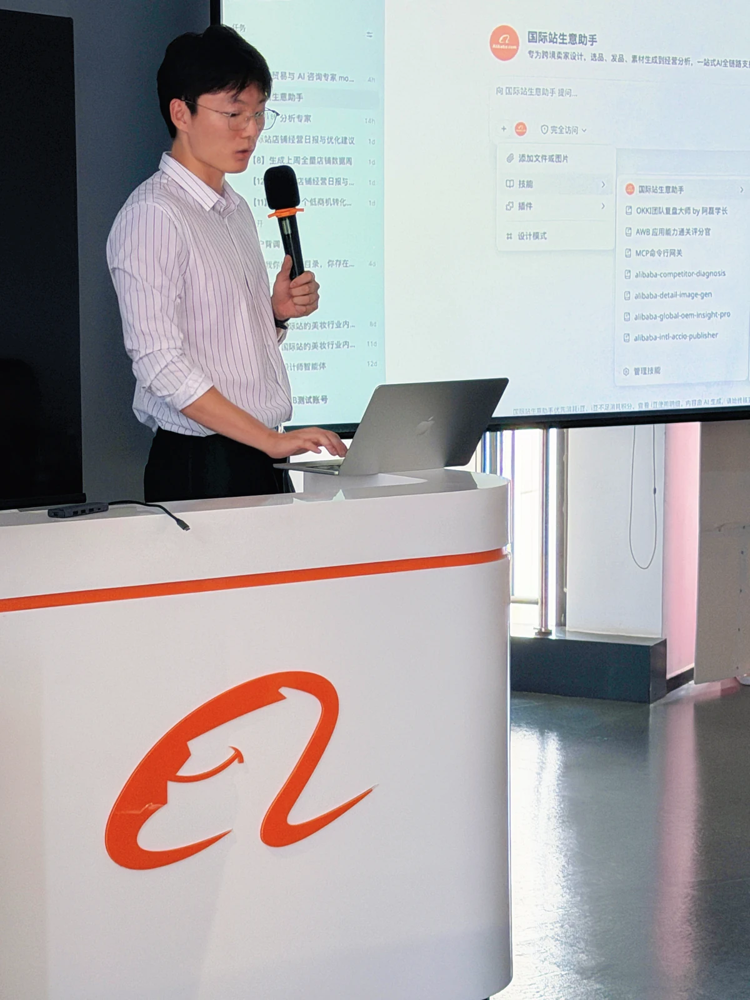

AccioWork✳
AccioWork✳负责 Accio Work 商业 AI 工作台的产品侧设计与迭代。工作围绕三条闭环展开：把客户问题拆解为 Agent / Skill 项目；独立完成 AI 功能、回归与场景评测，并沿 bad case 推进治理；优化从数据、AI 解释到商家消费与经营提效的完整工作流。
- 客户洞察 → Agent / Skill 定义
- AI 测评 → Bad Case 治理
- 数据 → AI 解释 → 商家经营提效
- 星途计划成员 · AW 讲师
我是王城昊。跨越 AI Agent、智能硬件、机器人、设计与商业，把模糊需求推进为可验证、可交付、可增长的系统。

从现在出发，回看每一段塑造我的经历。
AccioWork✳负责 Accio Work 商业 AI 工作台的产品侧设计与迭代。工作围绕三条闭环展开：把客户问题拆解为 Agent / Skill 项目；独立完成 AI 功能、回归与场景评测，并沿 bad case 推进治理；优化从数据、AI 解释到商家消费与经营提效的完整工作流。

 GIX
GIX在清华数据科学与 GIX 科技创新双学位项目中，把研究、软件、硬件与真实用户问题放在同一张桌面上。清华阶段位列前 10%，华盛顿大学阶段位列前 20%；获北京市优秀毕业生、小米一等奖学金与巴州英才二等奖学金，并以第一作者完成 HRI 2024 Late-Breaking Report。
 新雅书院XINYA COLLEGE
新雅书院XINYA COLLEGE以建筑学训练空间与系统思维，同时完成数据科学辅修，把设计、工程与计算连接起来。担任新雅书院学生会副主席，统筹大型活动与跨部门协作；综合成绩位列前 30%，获新雅书院特殊贡献奖、优秀共青团员与多项奖学金。

在北京八中完成六年中学阶段，获得金融街奖学金与优秀毕业生荣誉，并作为毕业生代表站上讲台。从竞技体育到公共表达，这一阶段建立了我持续投入、主动承担与把观点讲清楚的底层习惯。
AI 工作台、具身智能、内容产品与智能美妆。持续在技术、体验和商业之间寻找连接。

AI 产品经理 · 星途计划 · AW 讲师
让 AI 走进商家的日常经营，把客户需求推进为能完成任务的 Agent 与 Skill。

 $300K
$300K核心创始团队 · 产品负责人 · 项目管理者 · 路演主讲人
让 IP 手办成为能感知、会动作、可长期陪伴的桌面机器人。
主导产品定位、PRD 与 MVP，定义 IP 人格、语音体系和交互流程；把 26 自由度与 60+ 传感数据转译为产品规格，沉淀 300+ 标准化动作库，并协调 23 人跨校团队、研发、供应链和合作伙伴完成四代样机。作为路演主讲人推进融资，并在中国国际科技产业博览会展示原型。


独立开发者 · 内容产品经理 · 运营者
把英语场景、图文、语音与发布素材串成一条自动化内容生产线。
独立完成选题、产品设计、自动化开发与账号运营。用 Python / Pillow / JSON 搭建模板化渲染管线，接入大模型与 Minimax 语音 API，将单篇生产从约 30 分钟压缩到 3 分钟；沉淀 80+ 高频生活场景，实现每小时 20+ 篇产出，首月获 3000+ 点赞，并完成 10W+ 营收验证。

产品与交互 · 智能硬件创业实践
探索个人美妆 AI、主动陪伴与智能硬件结合的品质生活助手。
参与 HerOS 智能美妆镜硬件创业，探索个人美妆 AI、主动陪伴与智能硬件结合的产品体验。另在 SkinPilot AI 护肤助手项目中，负责对话交互重设计、竞品分析、测试用例与模型评估，把图像识别、成分解读和长期追踪组织成清晰的用户路径。
转动左侧齿盘，打开一段设计与工程实验。
 01 / WEB PRODUCT
01 / WEB PRODUCT让云存储不只保存文件，而是把照片、视频、笔记与心情重新组织成一座动态记忆画廊。
使用 Next.js、React、TypeScript 与 Tailwind 构建交互式媒体平台。NextAuth 负责安全登录；CSS Grid 组织响应式瀑布流，Intersection Observer 完成懒加载；React Context 管理媒体状态，localStorage 保存笔记与心情标签；归档 / 隐藏功能用 Set 与不可变更新保证界面状态一致。


 02 / ROBOTICS
02 / ROBOTICS从语音指令到目标识别、抓取、导航与递送的端到端机器人系统；负责让机器真正“看见”并找到物体。
以 YOLOv8、OAK-D RGB-D 相机与 ArUco 建立检测管线，并完成相机坐标到机械臂坐标的转换。六个子团队通过标准 ROS 2 消息与状态机协同；六类目标的 mAP@0.5 达 98.7%，坐标误差控制在 1–2 mm，完整任务成功率达到 90%。
 03 / WEARABLE
03 / WEARABLE无需触屏，用手势控制的户外热风险监测器；把环境数据变成即时、可感知的安全提醒。
基于 QT PY RP2040、APDS-9960 与 BME280，将温湿度、湿球温度与多模态警报装进 3D 打印腕带。通过 10–130 的手势阈值过滤日常摆臂误触；27°C 进入警告、30°C 进入危险状态，并用屏幕、LED 与蜂鸣器同步反馈。
 04 / PHYGITAL
04 / PHYGITAL用幽默而不是训诫解决共享空间的时间冲突：一只会感知门锁、计时、提醒并“公开处刑”的智能沙漏。
门锁上的霍尔传感器触发 10 / 20 分钟沙漏，光敏传感器判断计时结束并驱动蜂鸣器；超时则显示趣味 GIF。完成 ESP32 电路、磁铁触发、3D 打印、激光切割与外壳装配，把实体交互、行为设计与数字反馈做成闭环。
 05 / CREATIVE TOOL
05 / CREATIVE TOOL不再被固定模板限制：在无限画布上拖拽、缩放、组合照片与文字，再沿时间与标签回看记忆。
用 React、TypeScript 与 MongoDB 构建坐标化多媒体画布，支持拖拽、缩放与模板复用；通过不可变撤销栈与 JSON 序列化保存编辑状态，用 D3 制作记忆时间线和标签系统，并支持 PDF / 图片 / JSON 导出及 JWT 私密分享。
 06 / URBAN DESIGN
06 / URBAN DESIGN把“泡泡”变成可以坐、停靠、照明与参与的城市语言，让公共空间多一点轻盈与共同创造。
在 24 小时开放创新挑战中提出 Bubble-Seat、Bubble-Station 与 Bubble-Light 三个模块，并设计产品运营、公共参与和品牌联名的商业模式。项目把 SDG、城市公共空间与 IP 叙事连接起来，获得“最具投资价值奖”。
 07 / ARCHITECTURE
07 / ARCHITECTURE从赛博格、个人飞行与新材料出发，想象香港大学未来学生村：自由单元、开放立面与三维连接。
以“技术范式革命”为研究主线，通过 120 份问卷识别学生对个性化、隐私、新型公共空间与交通的需求：87% 希望定制，76% 强调隐私，68% 期待新的公共空间，92% 指出交通问题。用 Rhino、Grasshopper 与 Lumion 将研究转化为新的宿舍类型与校园连接系统。
 08 / ARCHITECTURE
08 / ARCHITECTURE在北京奥林匹克公园，把攀岩的裂隙、路线与身体运动嵌入一座商业、办公与酒店混合的高层建筑。
从攀岩动作与高层建筑类型研究出发，将巨柱支撑结构与可攀爬“裂隙”叠合，让专业运动和日常使用共同塑造建筑。项目用 AutoCAD、SketchUp、Revit、Enscape、Grasshopper 与 Rhino 完成，并获 LAC Media 专访。
设计的感受力，工程的实现力，产品与商业的判断力。点击任一维度，查看对应实践。


我是王城昊，也叫 Caelan。我的路径从建筑学的空间思维出发，经过数据科学、HCI 与机器人，最后汇入产品与创业。
这种看似跳跃的经历，训练了我在陌生领域快速建立模型的能力：先看人，再看系统；先抓关键矛盾，再决定用设计、代码、硬件还是组织协作去解。
 42.195 KM
42.195 KM把坚持拆成每一步。
 SWIM / BIKE / RUN
SWIM / BIKE / RUN1.5 km 游泳、40 km 骑行、10 km 跑步。
用另一种速度认识世界。
 5,396 M
5,396 M也愿意走向没有走过的地方。
 WINTER MODE
WINTER MODE在身体的反馈里，重新学习。
 TEAM PLAYER
TEAM PLAYER做主力 cutter，也做可靠的队友。
 GIVE BACK
GIVE BACK研一每周一回校教授《计算机图像处理》。
如果你正在做 AI 产品、智能硬件、机器人或一件尚未被定义的事，欢迎来聊。